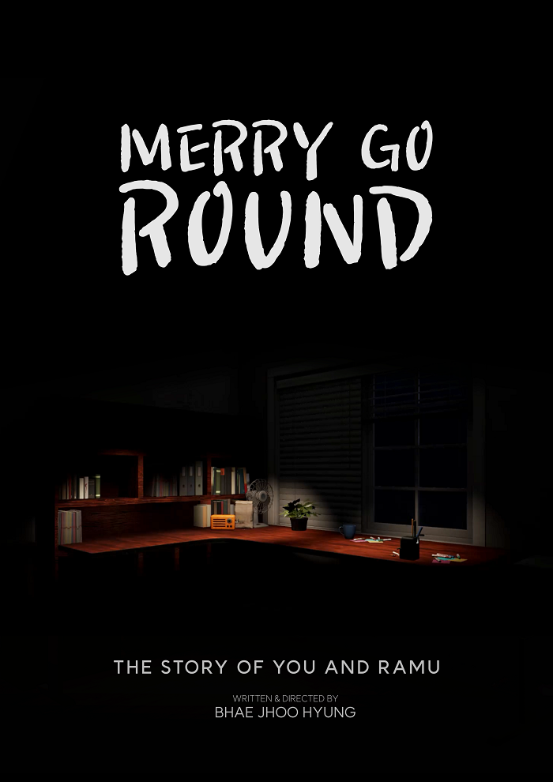

Merry Go Round[On Production][VR]
Personal project | 개인프로젝트
Director, Writer, Producer, UX Design, Character Design & 3D Modeling, Rigging & Animation, Programming, Sound Design
Merry Go Round is a VR-based third-person interactive animation that makes you achieve the dream of Ramu, a small wind-up doll. Through the rotating interface, the audience will be able to help Ramu and find out the meaning of the cycle of help in the world.
Merry Go Round는 VR기반 3인칭 인터렉티브 애니메이션으로 작은 태엽인형 라무의 꿈을 이룰 수있도록 돕는 당신의 이야기입니다. 관객은 회전 인터페이스를 통해 RaMu를 도우며 세상속 순환되는 도움의 의미를 생각할 수 있습니다.
Merry Go Round의 모든 상호작용은 회전 인터렉션을 통해 이루어집니다. 피젯큐브를 돌리거나, 주인공 라무의 태엽을 돌리거나, 라디오의 볼륨조절 노브를 회전시켜 소리를 키우거나, 연필깎이의 손잡이를 돌려 연필을 깎습니다.
Merry Go Round의 네러티브 또한 회전이 중심이 되어 누군가에게 보낸 나의 도움이 다시 내게 돌아온다는 긍정적 선순환의 회전을 주제로 하고 있습니다. 따라서 본 프로젝트는 인터렉션과 네러티브가 회전이라는 키워드를 통해 동시에 이루어지는 실험적 시도로 관객들에게 메세지를 전달하고자 합니다.

Credit
Director: JhooHyung Bhae
Writer: JhooHyung Bhae
Producer: JhooHyung Bhae
UX Design: JhooHyung Bhae
Narration: JhooHyung Bhae
Character Design & 3D Modeling: JhooHyung Bhae
Rigging & Animation: JhooHyung Bhae
VFX: JhooHyung Bhae
Sound Design: JhooHyung Bhae
Programming: JhooHyung Bha
2022.08 - 2023.03